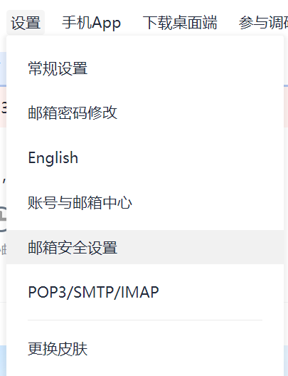
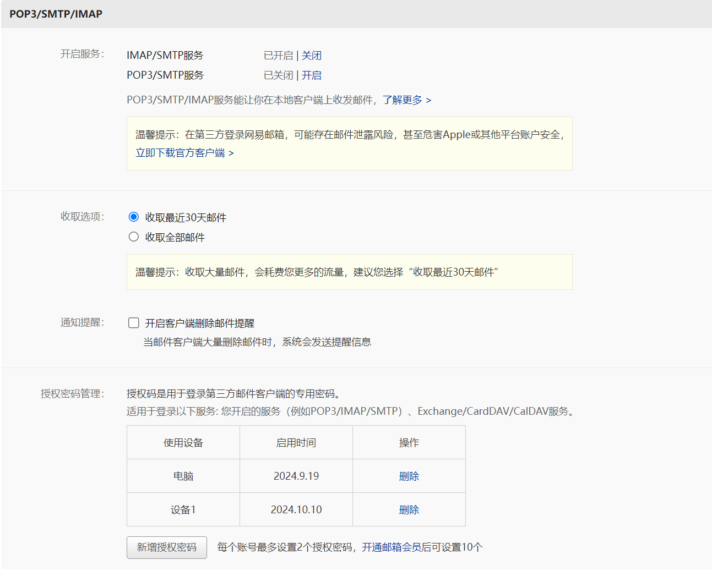
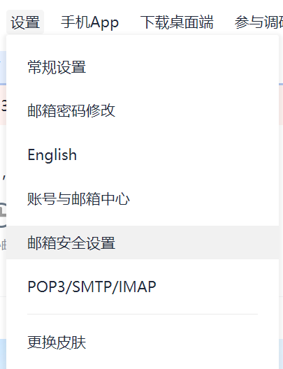

获取邮箱的授权码和账户
这里推荐使用 163邮箱，注册后即可获得授权码。登录网页版后点击设置 - 账户 - POP3/IMAP/SMTP/Exchange/CardDAV/CalDAV服务 - 开启服务 - POP3/SMTP服务 - 授权码，即可获得授权码。
获取授权码
在根目录下新建一个 key.txt 文件，把账号和授权码粘贴进去，保存。
下载
- 下载最新版本的 release
- 解压压缩包
- 运行
main.exe
这里推荐使用 163邮箱，注册后即可获得授权码。登录网页版后点击设置 - 账户 - POP3/IMAP/SMTP/Exchange/CardDAV/CalDAV服务 - 开启服务 - POP3/SMTP服务 - 授权码，即可获得授权码。
在根目录下新建一个 key.txt 文件，把账号和授权码粘贴进去，保存。
main.exe